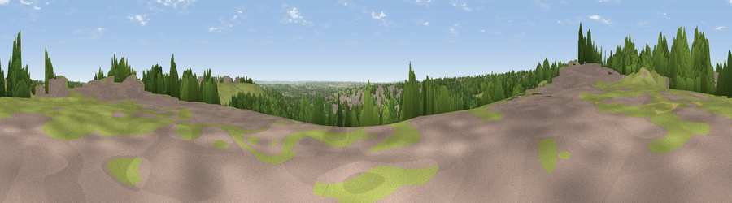

Viewpoint near Lambley
#28400 in England · top 33% of its area beats it · near LambleyWhere it is
The exact computed spot (SK 60975 44325). Click the marker for map links.
The view, rendered

A 360° render of this exact spot computed from the terrain model, tree cover and land cover — summer colours, afternoon light, calibrated against photographs of famous viewpoints. Real trees, hedges and buildings will differ in detail.
The panorama
Grey silhouette: terrain skyline in each direction (720 bearings, Earth curvature and refraction included). Dashed green: skyline with trees (+15 m) and buildings (+8 m) as obstacles. Blue strip: how far the ground is visible on each bearing.
Where the view opens
Wedge length = distance to the farthest visible ground on that bearing (vegetation-aware). Rings at 10, 25 and 50 km.
What fills the view
32% grassland · 32% woodland · 20% built-up · 13% cropland · 3% bare ground
Angular shares of the visible panorama (visual magnitude), not map area. Landscape diversity 0.63 (0–1 Shannon).
Key numbers
More beautiful places nearby
The staircase of upgrades: each row has a higher view potential than everything closer. Driving times are estimates from straight-line distance, calibrated against real road routing — check an actual route before setting out.
| Place | Direction | Drive | Score |
|---|---|---|---|
| South Viewing Platform | SE · 1 km | ~3 min | 50.3 |
| North Viewing Platform | E · 1 km | ~3 min | 50.6 |
| Viewpoint near Arnold | NNW · 3 km | ~8 min | 64.1 |
| No Man's Lane | WSW · 17 km | ~29 min | 65.8 |
| Viewpoint near Stathern | SE · 22 km | ~36 min | 66.3 |
| Viewpoint near Stathern | SE · 22 km | ~36 min | 67.2 |
| Viewpoint near Belvoir | ESE · 23 km | ~39 min | 68.9 |
| Viewpoint near Belvoir | ESE · 23 km | ~39 min | 70.8 |
52.99279, -1.09304 · source: screening · position refined by local search. Computed location — check access rights before visiting.